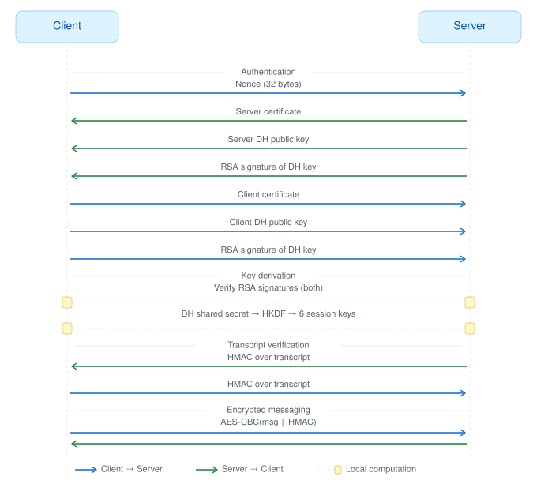
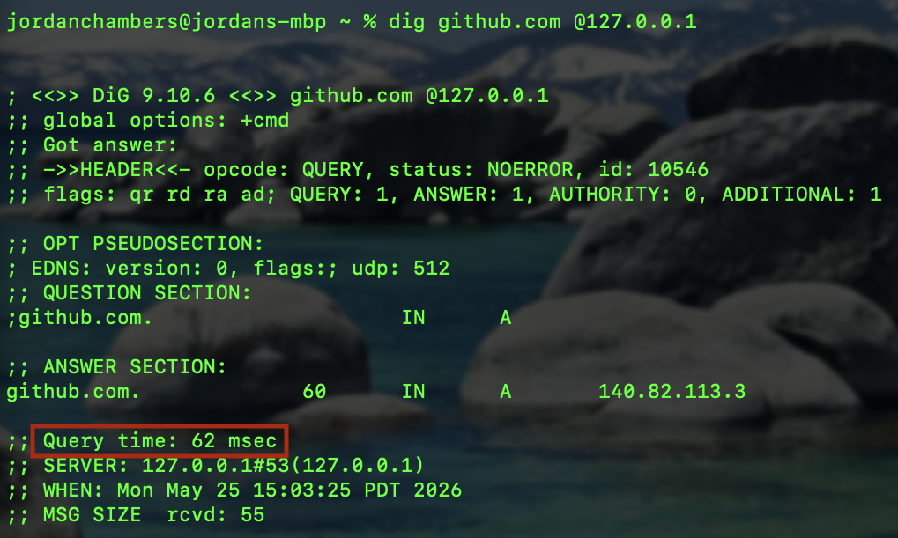
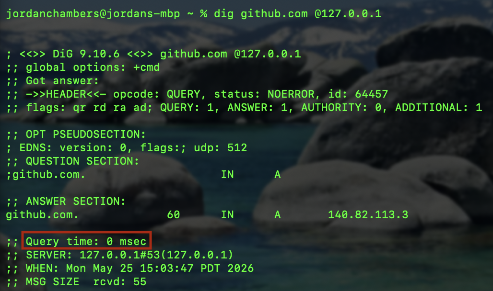

Projects/
Selected GitHub work pulled from my public READMEs.
I like projects that expose the machinery underneath an idea. The work here ranges from retrieval evaluation to network protocol internals and game-state logic, but the shared thread is the same: I want to understand the system well enough to name what it can and cannot promise.
scientific-codebase-rag.md
This is my active research repository for retrieval-augmented generation over scientific software. I use it to study why scientific code breaks generic RAG assumptions: users ask in mathematical language, code answers in APIs, and useful context may live across functions, docstrings, and cross-references.
The repository currently tracks chunking experiments, embedding choices, hybrid BM25 plus dense search, reciprocal rank fusion, and summary enrichment. The roadmap moves toward Qdrant hybrid search, cross-encoder reranking, richer math metadata, and execution-grounded evaluation for coding agents.
insider-threat-capstone.md
This capstone detects malicious insider behavior in enterprise activity logs. I worked on a pipeline that ingests raw CERT dataset logs, engineers daily behavioral features, simulates time day by day, and fuses detector outputs into alerts that an analyst can inspect.

The project matters to me because it treats explainability as part of the product surface. A suspicious score is not enough; the dashboard needs to show which signals fired, how the timeline changed, and why the escalation deserves attention.
tls-lite-java.md
TLSlite is a simplified TLS-like protocol implementation built so I could learn the mechanics of authenticated key exchange and encrypted messaging. The client and server perform mutual certificate authentication, ephemeral Diffie-Hellman key exchange, HKDF-based session key derivation, transcript HMAC checks, and authenticated encrypted messages over TCP.

The README is explicit about the project limits, including static IV reuse, missing DH public-key validation, timing-unsafe HMAC comparison, and no production-grade certificate chain validation. I left those caveats visible because security work should say exactly where the protection stops.
dns-resolver.md
This resolver listens for UDP queries, parses DNS wire-format messages, handles compressed domain-name pointers, checks an in-memory TTL-aware cache, and forwards cache misses to Google Public DNS. It was a useful way to turn a protocol that usually feels invisible into bytes I could inspect and construct.


The implementation covers packet construction, bit-level header flags, cache-key equality, record expiration, and response generation. It also documents practical limits such as single-threaded handling, no TCP fallback, no DNSSEC validation, volatile cache state, and a hard-coded upstream resolver.
cosmic-cat-combat.md
Cosmic Cat Combat is a Qt/C++ fixed shooter with sprite rendering, focused keyboard input, timer-driven projectile movement, collision detection, local profiles, scoreboard navigation, and multimedia cues. It is playful on the surface and very practical underneath.
The boss character moves through peek, retreat, monologue, attack, victory, and defeat phases while the player loop coordinates health, projectiles, replay flow, and screen transitions through a stacked-widget Qt interface. It was a compact lesson in keeping game state legible.